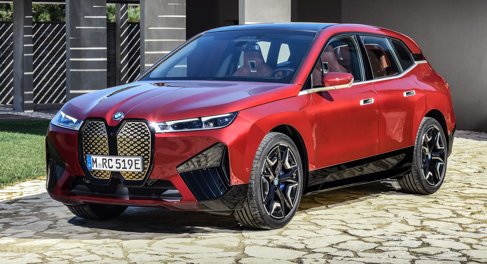

 Recently, BMW has taken a new step forward, moving the front grill forward to add a new precense to its automobiles. As somebody who has enjoyed BMW designs since the early 2000s, I think this has been a major step down from what they had before. The grills taken the sleek and bold styling of BMW and makes them look clumsy. The front looks like the face of a pig rather than the face of a beast. Only a minority actually prefer this styling to what BMW had before, the 2018 BMW M5 for one was an automative beauty. The grill is an important component to BMW but it has gone overboard with many of the modern designs. The cars themselves are considered some of the best cars to drive in the world, but the grills have unforutunately detered many from them. I hope that BMW can improve the grills for future model years.